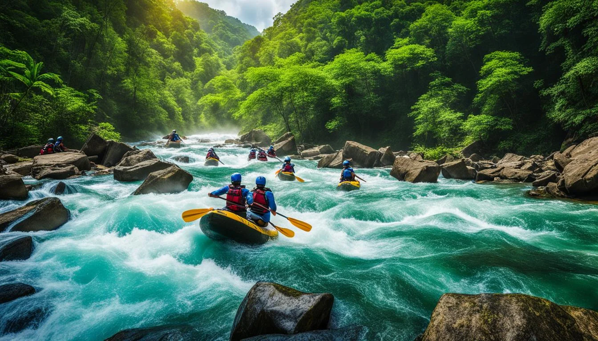
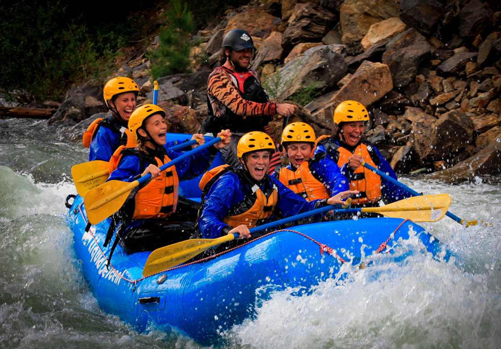
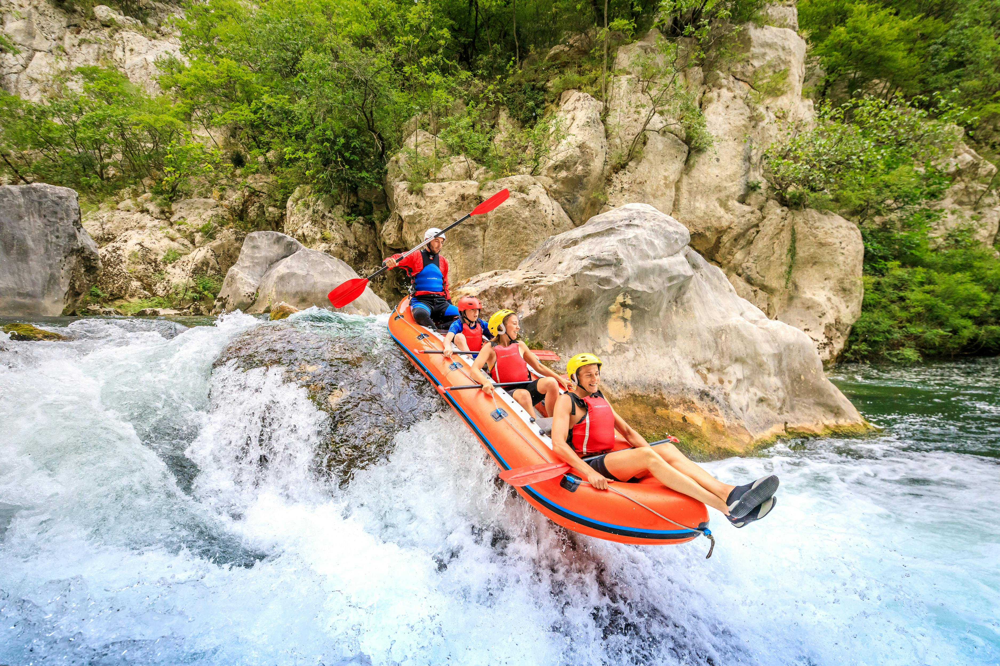

Prepare for your next Adventure!
The Great Salmon Run
Enjoy an opportunity to take part in witnessing the salmon run that occurs between the end of summer toward the end of winter. It is an annual, natural phenomenon where adult salmon migrate from the ocean back to the freshwater rivers where they were born to spawn, swimming against the current and often leaping over obstacles to reach their spawning grounds, completing their life cycle by laying eggs before eventually dying. This journey is considered one of nature's most remarkable migrations with different salmon species having distinct "runs" depending on the time of year they migrate upstream to spawn.
Dinosaur River Expedition
This family-owned outfitter allows visitors to create their own rafting experience that accommodates everyone’s idea of fun. Whether you want to float through the canyons of the Green River or splash along the Yampa River, your wish is their command. With adventures ranging from one to five days, there’s something for beginners or life-long enthusiasts. If a five-day trip isn’t long enough for you, it also offers specialty trips, some lasting a grand total of eight days!
Holiday River Expedition
Dee and Sue Holladay, founders of Holiday River Expedition describe their rafting experience best. “Sue and I, our guides, staff, and you — our guests — have a common bond that has strengthened Holiday as an entity. We are all humbled by nature’s power, strengthened by its energy, challenged by its integrity and grounded by its loftiness.” Become one with nature as you go with the flow on your next river trip with Holiday River Expedition. Holiday River Expedition offers many diverse trips, customized to fit the needs of your friends and family. Experience the ultimate Western adventure vacation with a rafting trip that’ll refresh your soul.
| Expedition | Start Date | End Date | Length |
|---|---|---|---|
| The Great Salmon Run | Late Summer | Early Winter | 6.23 miles |
| Dinosaur River Expedition | Early Summer | Early Fall | 8.12 miles |
| Holiday River Expedition | Early Summer | Early Fall | 3.87 miles |
| Canyon Snake River | Early Summer | Early Fall | 4.57 miles |
| Smokey the Bear Expedition | Early Summer | Early Fall | 10.49 miles |